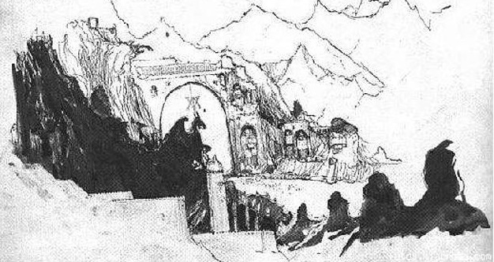
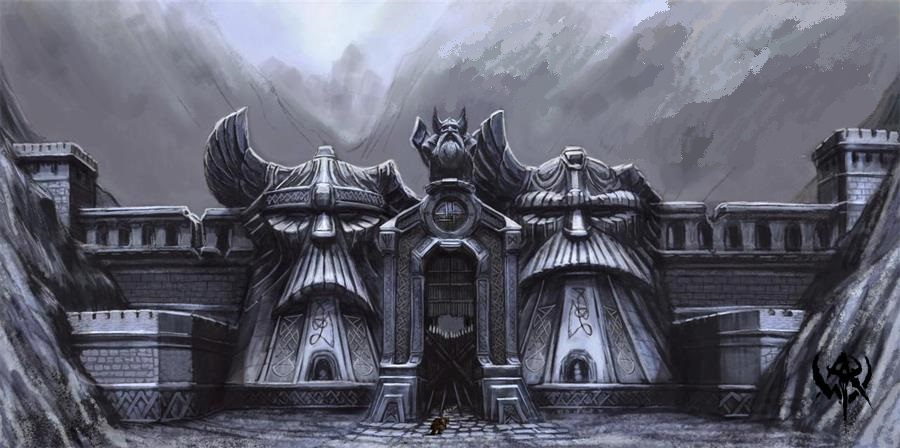
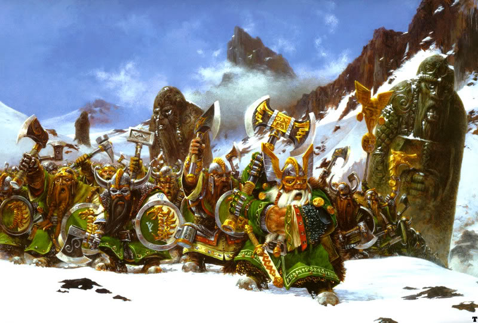
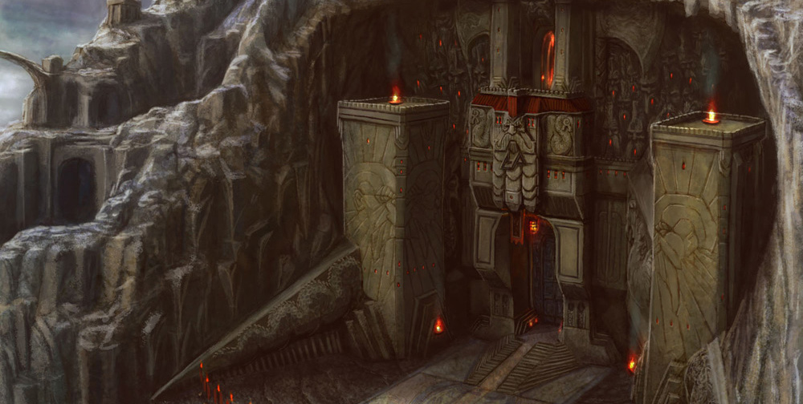

Famous holds of the Karaz Ankor
Holds of the World's Edge Mountains
Grey and Black Mountain holds
Holds of the World's Edge
Capital of the Dwarf Empire
Karaz-a-Karak
This is the mightiest and most populous of all Dwarf cities, the capital of the Karaz Ankor and is the stronghold of the High King. Here, amongst its ancient temples to the Ancestor Gods, High King Thorgrim Grudgebearer holds court in a vaulted Great Hall large enough to engulf a Human town. The forest of pillars that form the mile-long nave of the hall tower high into darkness. Despite suffering attacks beyond number, Karaz-a-Karak has never fallen to an invader. Here are kept the Great Book of Grudges, the Book of Remembering and countless hoarded treasures, each an object of awe and veneration to any Dwarf. After a great deal of bluster and grumbling, even the most independent of Dwarfs from one of the far-off holds will ultimately admit to a fierce pride of Karaz-a-Karak. Although their empire may have crumbled, here at the stony heart of their realm, its power and splendor endure.

The most mechanized of strongholds, Zhufbar is built into a deep chasm worn over time from a torrential waterfall that cascades down through its centre. The sound of thousands of grinding water wheels, wheezing bellows and pounding drop hammers echoes off nearby peaks - a never-ceasing tumult of industry. Spark-ridden smog wreaths the peak above, and at night, the chasm glows from untold furnace fires. Rebuilt after its near-destruction during the Time of Woes, Zhufbar is the centre of metalwork for the Karaz Ankor and also contains the principal shrine of the Dwarf Engineer's Guild. Although it is surrounded by greenskin tribes, and its lowermost levels are riddled with Skaven, Zhufbar stands strong. In addition to its visible defences, the stronghold also contains a series of retractable towers, iron-clad gun bunkers and rune-protected blast walls. A formidable airfleet, berthed in telescopic launch bays hidden about the mountainside, also ensures that besieging forces never survive for long.

Grey and Black Mountain Holds
Horn Hold
Karak Hirn
Karak Hirn, known as the "Hornhold" to Humans, is the most important Dwarf kingdom in the Black Mountains between Tilea and the southern borders of The Empire. A young and growing kingdom with many vassal fiefdoms surrounding it, this hold was settled slowly, and only grew in relative importance after the near-collapse of the old Dwarf Empire. Some of the cities that make up this hold are built on the mountain's side, and a few are even exposed to the air. Due to its position in the Black Mountains, this hold is not connected to the Underway, and so must be approached via overground roads, therefor passing through treacherous mountain passes and cliff-hanging tracks. Rich deposits of precious metals and iron are found here, but there are only a few lodes of the more rare metals and gems. None of the strongholds and cities of Karak Hirn have become wealthy or powerful enough to rival the great kingdoms and empires of the Worlds Edge Mountains. However, it is closer and more accessible to the markets of the Empire and Tilea and acts as a trading center and market for imported wares from the ancient holds in the Worlds Edge Mountains.
Karak Hirn is also called the Hornhold, because of the huge mountaintop cavern that when wind blows through, creates a natural effect that projects a terrifying blast of sound through the mountains. The Dwarfs have exploited this natural phenomenon by constructing additional sounding chambers, and massive doors that they can open and close to change the pitch and duration of the sound. The mountain's horn is used to signal to both smaller kingdoms and outlying cities, summon warriors and frighten away simple creatures such as Trolls.

Barren Earth Hold
Karak Norn
The largest hold in the Grey Mountains is Karak Norn (“Barren Earth Hold”). Populated by displaced clans from the fallen hold of Mount Silverspear and the watchtowers of Mad Dog Pass, Karak Norn sits on the only sizeable deposits of metal and semiprecious stones in the Grey Mountains. The Dwarfhold is strategically placed with its upper level visible on a plateau high above the Loren Forest. This enables the Dwarfs to monitor the activities of the Wood Elves of Loren, albeit from a considerable distance. While the Elves haven’t been a threat for over 4,000 years, and the grudge against the Elves was officially settled with the taking of the Phoenix Crown, the Dwarfs see no harm in vigilance.
